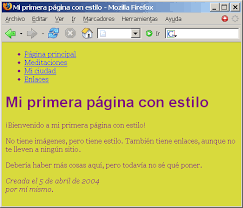
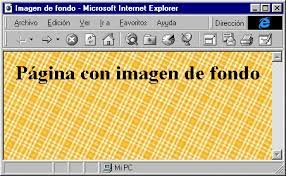

En esta página se explican las propiedades que se pueden aplicar a los fondos de cualquier elemento de una página web. Algunas de estas propiedades ya formaban parte de la recomendación CSS 2.1 y otras se han introducido en la futura recomendación CSS 3: Fondos y bordes. Aunque actualmente (diciembre de 2019) esta recomendación se encuentra en elaboración, los navegadores aceptan ya estas propiedades, por lo que pueden utilizarse sin problemas. Cualquier imagen puede utilizarse de imagen de fondo. Para adaptarse a los diferentes tamaños de pantallas y mantener las imágenes lo más pequeñas posibles, si el elemento es mayor que la imagen, las imágenes se suelen repeti
La propiedad compuesta background permite definir simultáneamente todas las propiedades relacionadas con el fondo de cualquier elemento: background-color, background-image, background-position, background-size, background-repeat, background-attachment, background-origin y background-clip
La propiedad background-image establece cualquier imagen como fondo de un elemento. La sintaxis es la siguiente background-image: url("nombre_de_la_imagen"), en la que el nombre de la imagen debe indicar el nombre (y la extensión) de la imagen, así como el camino absoluto o relativo desde la hoja de estilo. Las comillas que rodean el nombre de la imagen sólo son necesarias si hay espacios en blanco en el nombre de la imagen
 